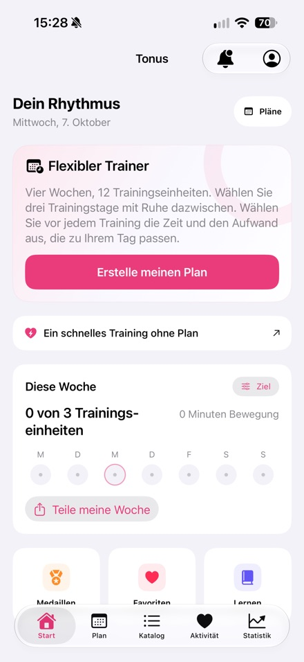
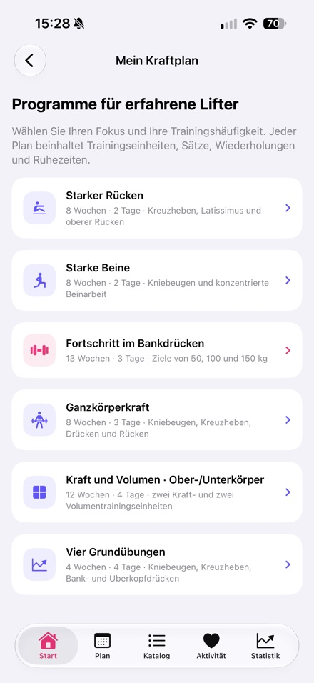
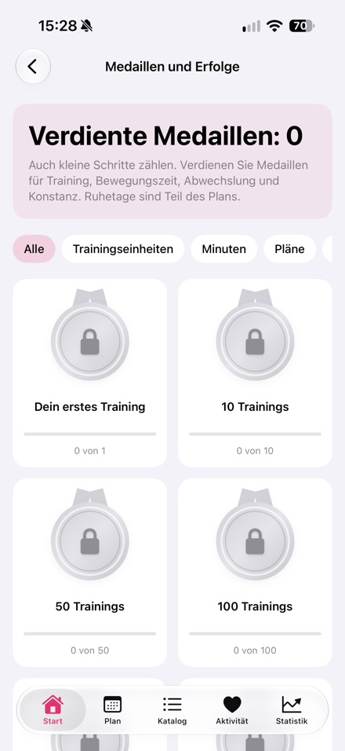

Von Nikita Revin, Entwickler von Tonus. Am 16. Oktober 2026 für die öffentlich verfügbare Version 1.4 aktualisiert.
Tonus ist eine kostenlose Trainings-App für das iPhone. Sie bietet kurze Einheiten zu Hause, einen flexiblen Plan und sechs Programme für das Fitnessstudio. Ein Konto oder Abonnement ist nicht erforderlich.
Pressepaket
Produktinformationen, App-Symbol und drei Screenshots der veröffentlichten Version herunterladen.
Pressepaket herunterladen (.zip)Tonus 1.4
- iPhone mit iOS 17 oder neuer
- Kostenlos, ohne Registrierung, Abonnement oder In-App-Käufe
- Training zu Hause mit 5, 10 oder 20 Minuten; Optionen ohne Sprünge, im Stehen oder ohne Geräte
- Flexibler Plan mit 12 Einheiten an gewählten Wochentagen; verpasste Einheiten werden verschoben
- Sechs Studio-Programme, Technikhinweise, Timer und Fortschrittsübersicht
- Optionale Anbindung an Apple Health; Trainingsverlauf wird lokal gespeichert
- Pläne und schriftliche Hinweise funktionieren offline; Online-Videos benötigen Internet
- 60 Übungen mit Videos; externe Videoplattformen können eigene Werbung anzeigen
- Deutsche Oberfläche verfügbar
Screenshots der veröffentlichten App-Store-Version 1.4



Anfragen für einen redaktionellen Test
Nikita Revin · nik007rev@gmail.com
Tonus bietet keine medizinische Versorgung. Bei Schmerzen oder Unwohlsein das Training beenden. Bei gesundheitlichen Einschränkungen eine qualifizierte Fachperson fragen.
Tonus herunterladen